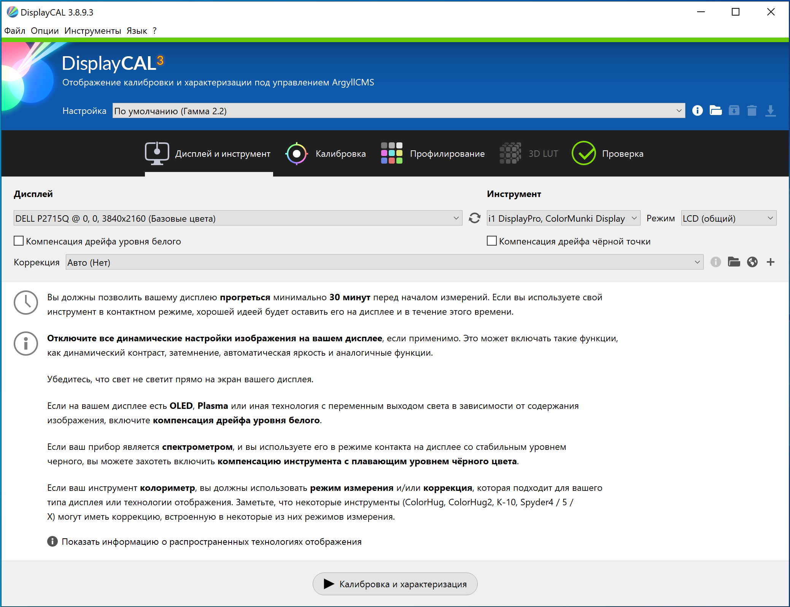
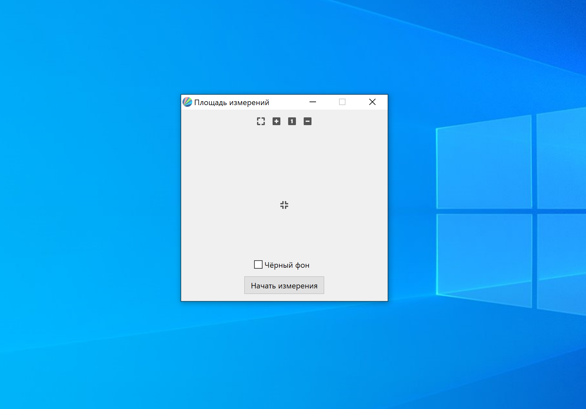
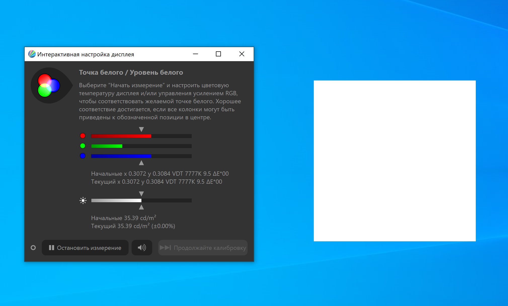
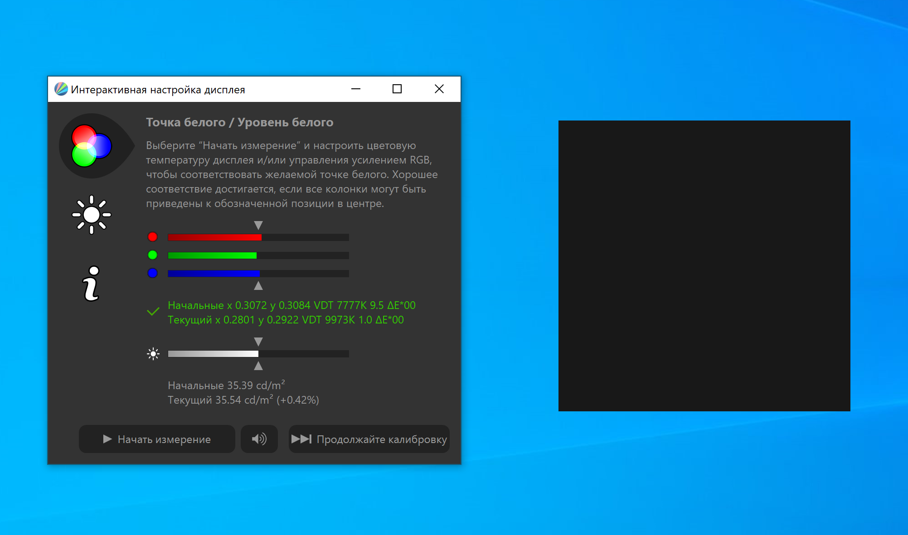
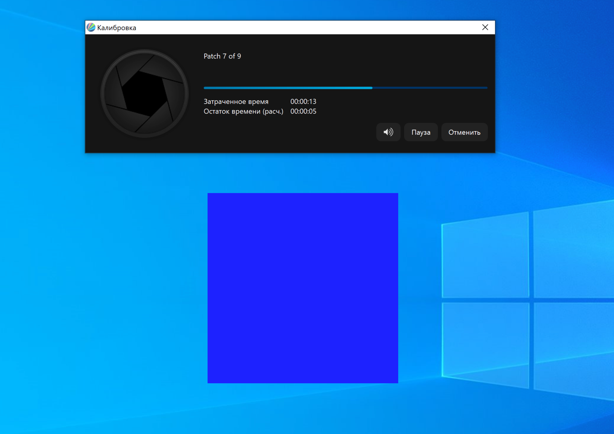
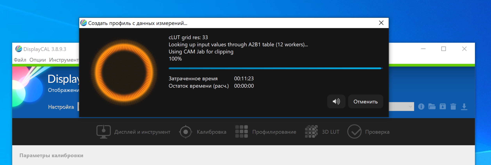
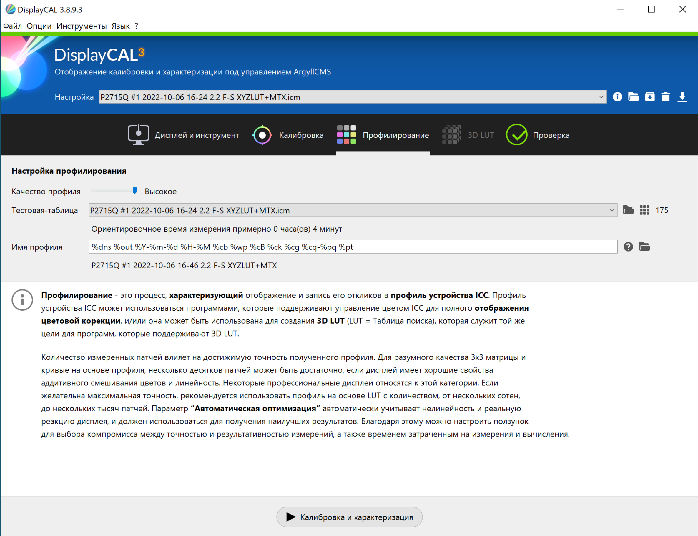
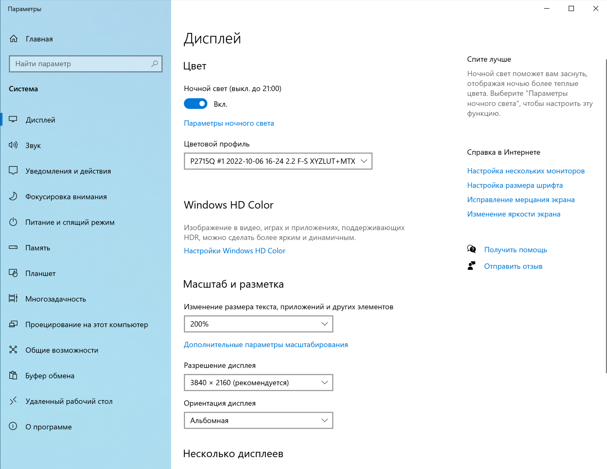

Appendix A — Калибровка монитора
Калибровка монитора осуществляется для того, чтобы стандартизировать его цветопередачу. По результатам калибровки вы также получаете цветовой профиль, который сможете прикреплять к графическим файлам, создаваемым на вашем компьютере. Если такой файл будет открыт на другом мониторе, который также откалиброван, наличие двух цветовых профилей позволит графической системе путем преобразования цветовых компонент через промежуточное пространство XYZ отобразить файл в виде, максимально приближенном к тому, что вы видели на первом мониторе.
Для калибровки используются колориметр и спектрометр. Основной прибор — это колоритметр, он измеряет характеристики излучения оттенков красного, синего и зеленого цвета и их комбинаций (включая градации серого от белого до черного). Спектрометр является вспомогательным прибором, который позволяет сделать коррекцию результатов колориметрических измерений путем более точных замеров характеристик излучения. В простейшем случае можно обойтись без спектрометра (но цветовой профиль получается менее точным).
Для калибровки мы будем использовать программное обеспечение DisplayCAL и колориметр X-Rite i1 Display:
Необходимо загрузить DisplayCAL и установить его, а также подключить колориметр к порту USB.
При открытии программы необходимо выбрать ваш монитор и колоритметр в списках Дисплей и Инструмент. Поскольку спектрометра у нас нет, Коррекцию установите автоматическую:

Если колориметр отсутствует в списке инструментов, выберите в меню Инструменты пункт Обнаруженные устройства отображения и инструменты, чтобы произвести поиск заново:

После этого можно приступать к калибровке, если соблюдено следующее условие:
Важно: перед началом калибровки монитор должен быть включён не менее 30 минут, а различные динамические настройки, повышающие чёткость изображения, ночной режим и прочее необходимо отключить.
После того как монитор и колориметр определены, можно запускать калибровку, нажав для этого кнопку Калибровка и характеризация. Появится небольшое диалоговое окно, с помощью которого можно изменить положение и размеры области экрана, в пределах которой будут проводиться измерения:

В центр этой области необходимо разместить колоритметр линзой в сторону экрана, а противовес свесить за экраном:

После этого нужно нажать Начать измерения. В течение нескольких минут цветовые ползунки должны стабилизироваться в определенном положении:

Далее необходимо, меняя настройки монитора, привести ползунок яркости и ползунки трех цветовых компонент в центральное положение (или максимально близко к нему), что будет означать примерно сопоставимую интенсивность трех типов световых излучателей R,G,B.:

Если регулировки выполнены, можно нажать Продолжайте калибровку. В течение нескольких минут DisplayCAL будет показывать колориметру цветовые пятна разной яркости, насыщенности и цветового тона и выполнять измерения:

После калибровки будет запущен процесс создания цветового профиля и LUT (Look Up Table) для видеокарты:

Если профиль монитора успешно создан, то в конце процедуры вы увидите следующий диалог. Чтобы сразу же воспользоваться профилем, необходимо выбрать опцию Установить профиль:

Название профиля и путь к нему можно посмотреть на вкладке Профилирование:

Если вы пользуетесь операционной системой Windows, то получившися цветовой профиль должен быть активирован в настройках дисплея:

–ù–∞ —ç—Ç–æ–º –≤—Å—ë! ü§ì